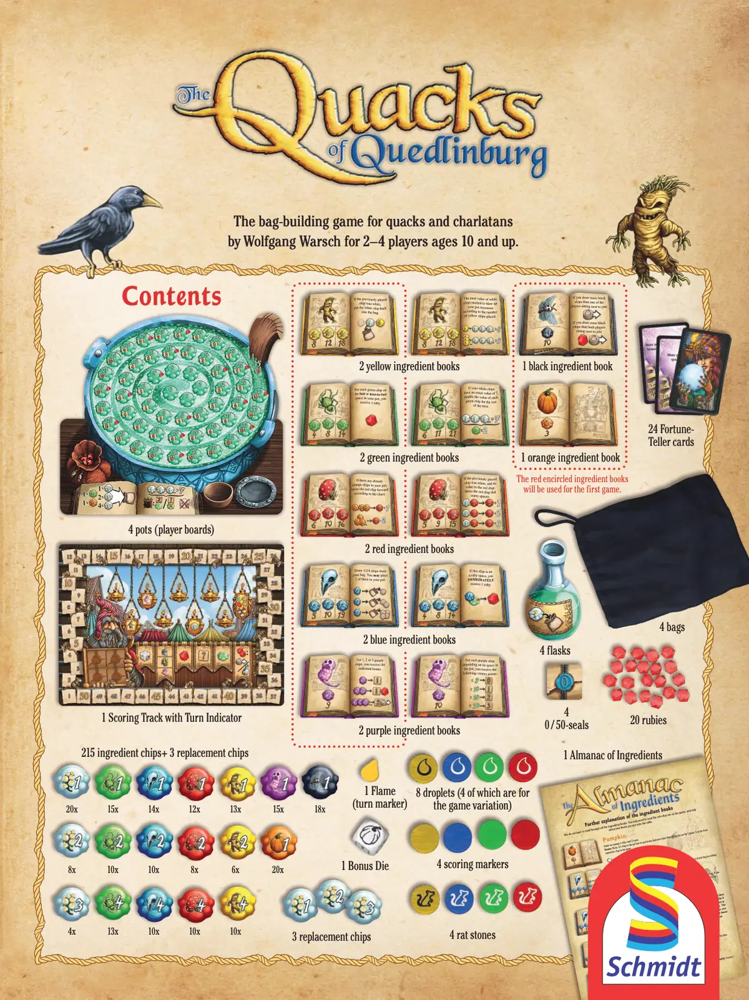
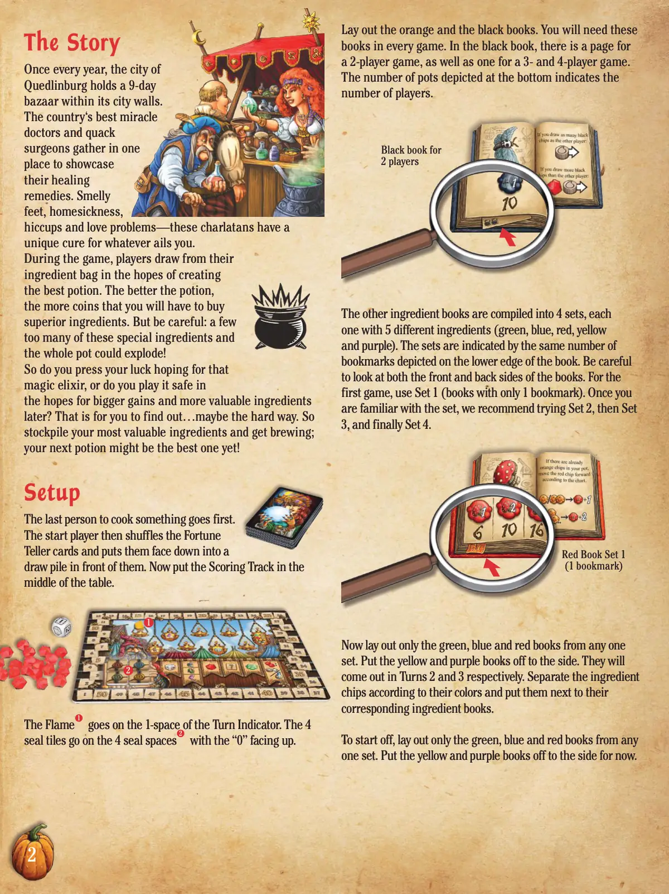
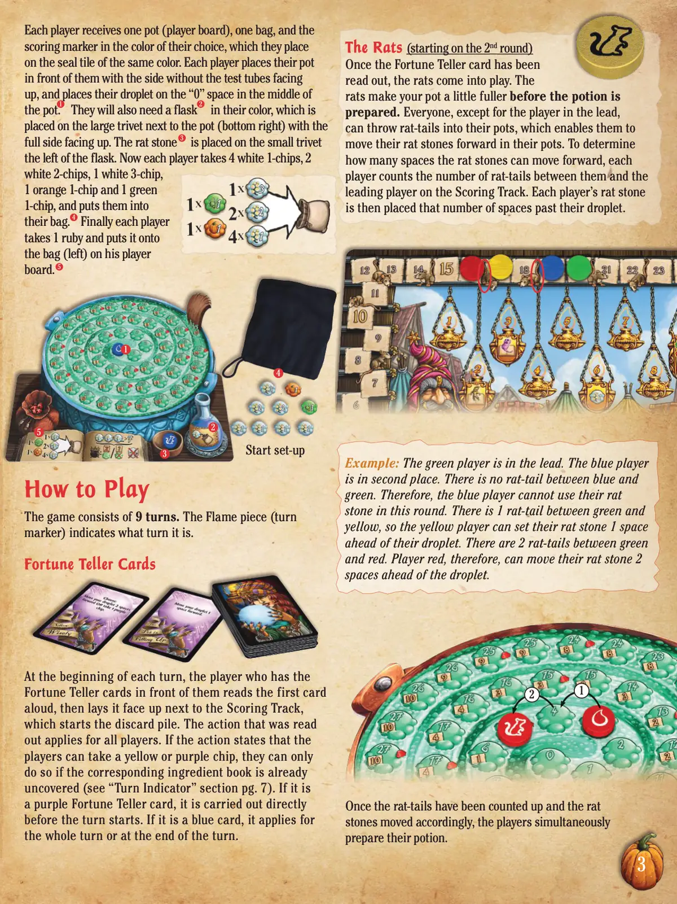
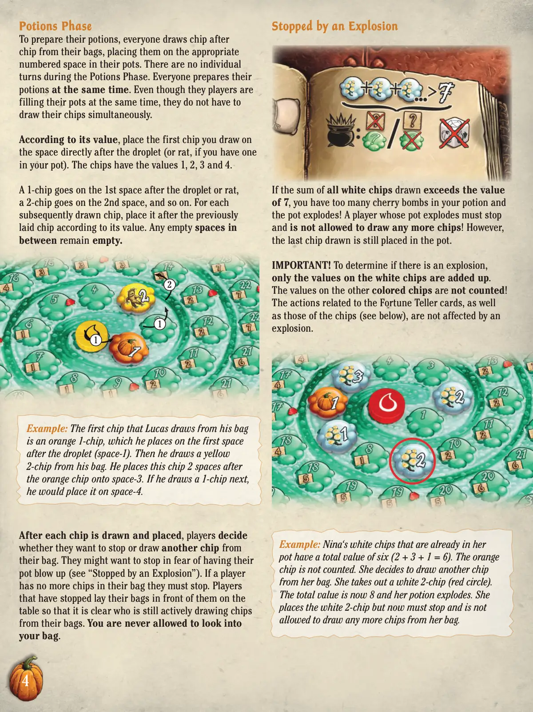
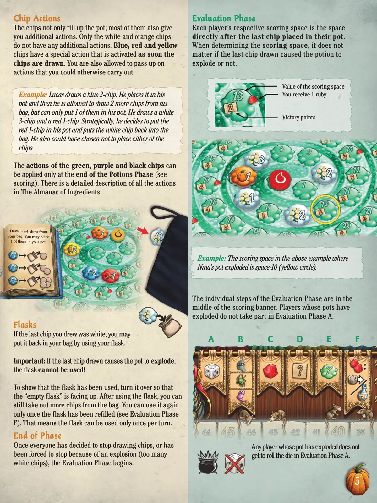
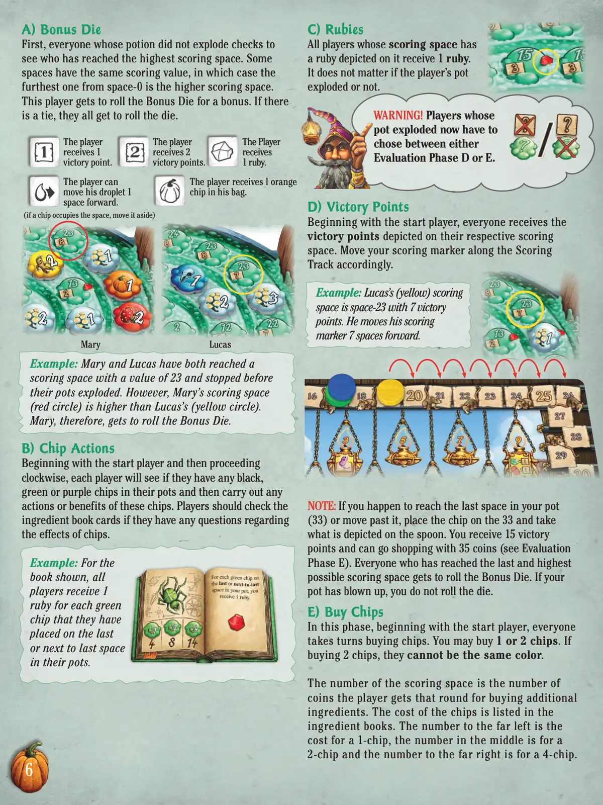
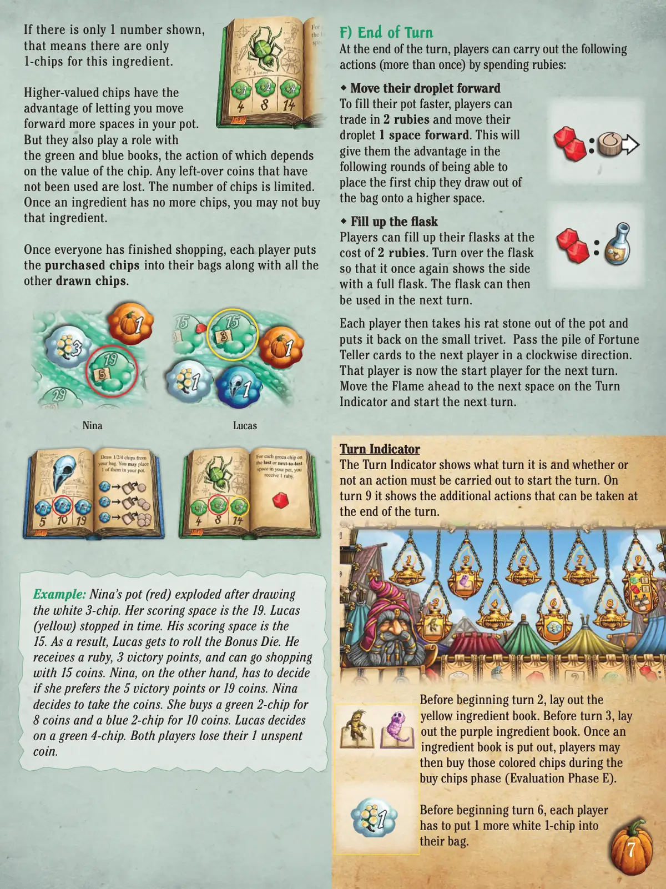
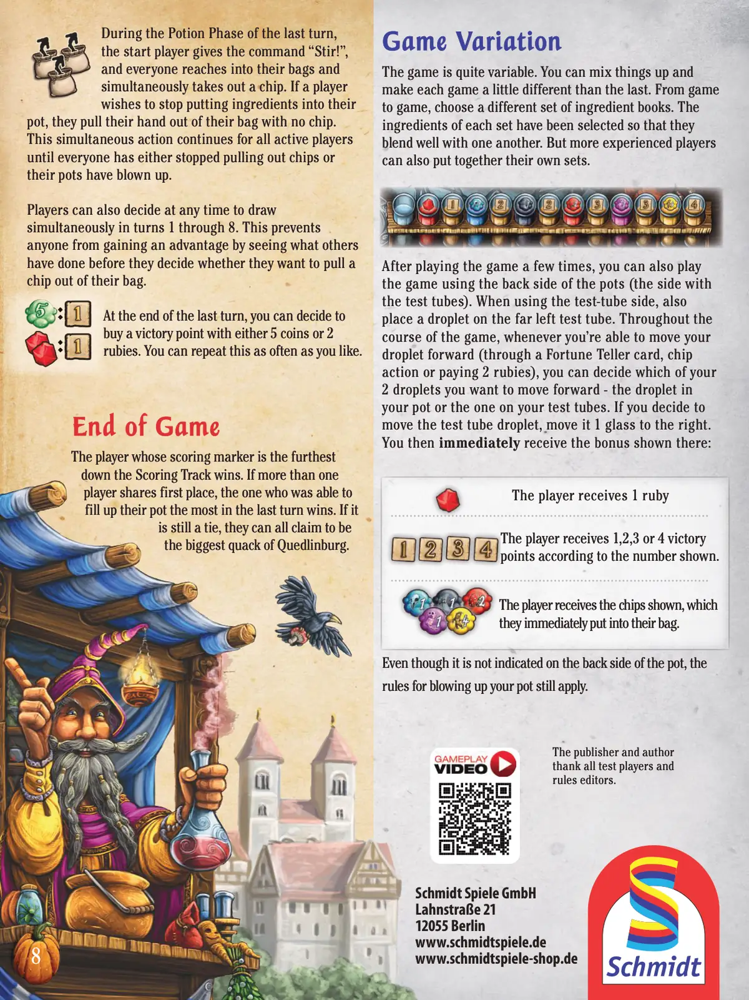

🧪 奎德林堡的江湖郎中
Quacks · 设计：Wolfgang Warsch · Schmidt Spiele 出版 · 2–4 人 · 官方英文规则书全文翻译（8 页 · AI 辅助机翻）
本页为《奎德林堡的江湖郎中》（Quacks, 2018）官方英文规则书的全文中文翻译，底本为 Schmidt Spiele 官方（产品页 88220_Quack_rules_english_2024.pdf 英文规则）（88220_Quack_rules_english_2024.pdf，8 页），整本译出、未删节，原版规则书页面随文嵌入——点击任意图片即可放大查看。规则内容归 Schmidt Spiele 及版权方所有，译文仅供个人学习查阅。
整理说明：本页由 AI 辅助机翻整本规则书并按本站术语口径对齐（牌库/手牌/回合/轮/板块/指示物等），数字与费用逐段保留原文口径；如对规则细节有疑问，请以随文原书页面或上方官方原文 PDF 为准。每页译文上方为对应的原版规则书页面。

成分书补充说明
您无需通读所有成分书。只需阅读游戏中的套装，并且仅在新的成分书被放到桌面上时才阅读。
南瓜：
费用：一个橙色1点筹码价值3枚硬币。
奖励：无。锅中的1点筹码除了填充1个空间外没有特殊功能。它是游戏中成本最低的筹码。
乌鸦头骨：
套装 1
费用：一个蓝色1点筹码价值5枚硬币，2点筹码价值10枚，4点筹码价值19枚。
奖励：如果您从袋子中抽到蓝色筹码，请将其放入您的锅中。然后您可以根据筹码上显示的数量从袋子中取出筹码。
对于1点筹码，取出1个筹码。
对于2点筹码，取出2个筹码。
对于4点筹码，取出4个筹码。
从抽出的筹码中，您可以将其中的1个作为您的下一个筹码打出。将其他筹码放回袋子。如果您不喜欢看到的结果，可以将它们全部放回袋子。如果新打出的筹码也有奖励，可以立即执行。
套装 2
费用：一个蓝色1点筹码价值5枚硬币，2点筹码价值10枚，4点筹码价值19枚。
奖励：当您将蓝色1点筹码放入锅中时，如果您的药水在下一个抽出的筹码时爆炸，您将获得胜利点和购物硬币。然而，如果您的药水爆炸，您仍然不能投掷奖励骰子。如果您放置蓝色2点筹码，即使您的药水在接下来的两个抽出的筹码时爆炸，上述规则仍然适用。如果您放置蓝色4点筹码，上述规则适用于接下来的4个抽出的筹码。这些效果不会叠加。如果一个蓝色筹码放在另一个蓝色筹码之后，且后者的奖励尚未结束，您将获得两个蓝色筹码中较好的奖励，而不是两者都获得。如果一个蓝色4点筹码放在蓝色2点筹码之后，奖励仅适用于接下来的4个抽出的筹码，而不是5个。如果一个蓝色2点筹码是在蓝色4点筹码之后的第三个放置的筹码，奖励仅适用于接下来的2个抽出的筹码。
套装 3
费用：一个蓝色1点筹码价值4枚硬币，2点筹码价值8枚，4点筹码价值14枚。
奖励：如果您将蓝色筹码放在红宝石格上，您立即获得1个红宝石。蓝色筹码的数值没有意义。
套装 4
费用：一个蓝色1点筹码价值5枚硬币，2点筹码价值10枚，4点筹码价值20枚。
奖励：如果您从袋子中抽到蓝色1点筹码并必须将其放在红宝石格上，您立即获得1个胜利点。2点筹码获得2个胜利点，4点筹码获得4个胜利点。
为庸医和江湖骗子设计的袋中构建游戏
为庸医和江湖骗子设计的袋中构建游戏
作者：Wolfgang Warsch，适合2-4名玩家，年龄10岁及以上。
作者：Wolfgang Warsch，适合2-4名玩家，年龄10岁及以上。
内容
内容
4个锅（玩家版图）
1个带回合指示器的记分轨道
4个烧瓶
2本黄色成分书
2本绿色成分书
2本红色食材手册
2本蓝色食材手册
1本黑色食材手册
1本橙色食材手册
0/50个封印
1个奖励骰子
3个替换筹码
1本食材年鉴
215个食材筹码+ 3个替换筹码
20x
12x
13x
带红色圆圈的食材手册
将用于第一局游戏。
15x
18x
15x
8x
4x
13x
10x
10x
10x
10x
10x
8x
6x
20x
14x
20个红宝石
4个记分标记
4个袋子
4个老鼠石
1个火焰
(回合标记)
24张算命师卡牌
8个水滴(其中4个用于游戏变体)

故事
故事
每年，奎德林堡市都会在其城墙内举办为期9天的集市。
全国最好的奇迹医生和江湖郎中聚集在此，
展示他们的治疗秘方。臭脚、思乡、打嗝和爱情问题——
这些江湖骗子对任何困扰你的小毛病都有独特的疗法。
在游戏中，玩家从他们的材料袋中抽取材料，
希望能制作出最好的药剂。药剂越好，
你就能获得更多金币来购买更优质的材料。但要小心：
如果这些特殊材料放得太多，整个锅可能会爆炸！
那么，你是要冒险希望得到那剂神奇的灵药，
还是稳妥行事，希望之后获得更大的收益和更有价值的材料？
这需要你自己去发现...也许会付出一些代价。所以，
囤积你最宝贵的材料，开始熬制吧；
你的下一剂药剂可能是迄今为止最好的一款！
设置
设置
最后烹饪的人先开始。然后起始玩家洗混命运预言家牌，
并将其面朝下放在自己面前的牌库中。现在将计分板放在桌子中央。
火焰指示物放在回合指示器的1格上。4个封印板块放在4个封印格上，
"0"面朝上。
展开橙色和黑色书籍。每局游戏都需要这些书籍。在黑色书籍中，
有2人游戏页面，以及3人和4人游戏页面。底部描绘的锅的数量表示玩家数量。
其他材料书被汇编成4套，每套包含5种不同的材料（绿色、蓝色、红色、黄色和紫色）。
这些套件由书籍底部边缘描绘的相同数量的书签表示。请注意查看书籍的正反两面。
对于第一局游戏，使用套件1（只有1个书签的书籍）。当你熟悉了该套件后，
我们建议尝试套件2，然后是套件3，最后是套件4。
现在从任意一套中只展开绿色、蓝色和红色书籍。将黄色和紫色书籍放在一旁。
它们将在第2回合和第3回合分别使用。根据颜色将材料指示物分开，
并放在相应的材料书籍旁边。
开始时，从任意一套中只展开绿色、蓝色和红色书籍。暂时将黄色和紫色书籍放在一旁。
2人游戏用黑色书籍
红色书籍套件1
（1个书签）

每位玩家获得一个坩埚（玩家版图）、一个布袋和一枚他们选择颜色的记分指示物，他们将指示物放置在相同颜色的封印板块上。每位玩家将他们的坩埚放在自己面前，没有试管的一面朝上，并将他们的水滴放在坩埚中间的"0"格上。他们还需要一个自己颜色的烧瓶，将其放在坩埚旁边的大三脚架（右下角）上，满的一面朝上。鼠石放在烧瓶左侧的小三脚架上。现在每位玩家拿取4个白色1-筹码、2个白色2-筹码、1个白色3-筹码、1个橙色1-筹码和1个绿色1-筹码，并将它们放入自己的布袋中。最后每位玩家拿取1个红宝石，并将其放在其玩家版图上的布袋（左侧）上。
如何游戏
如何游戏
游戏由9个回合组成。火焰指示物（回合指示物）指示当前是第几回合。
塔罗牌
塔罗牌
在每个回合开始时，拥有塔罗牌的玩家大声读出第一张牌，然后将其面朝上放在记分轨道旁边，这形成了弃牌堆的开始。读出的行动适用于所有玩家。如果行动说明玩家可以拿取黄色或紫色筹码，他们只有在相应的成分书已经被翻开的情况下才能这样做（参见第7页"回合指示器"部分）。如果是一张紫色塔罗牌，它在回合开始前直接执行。如果是一张蓝色牌，它适用于整个回合或在回合结束时执行。
老鼠
老鼠（从第2轮开始）
塔罗牌被读出后，老鼠开始进入游戏。老鼠们在准备药剂前让你的坩埚稍微满一些。除了领先的玩家外，每个人都可以将鼠尾投入他们的坩埚，这使他们能够在自己的坩埚中向前移动他们的鼠石。为了确定鼠石可以向前移动多少格，每位玩家计算他们在记分轨道上与领先玩家之间的鼠尾数量。然后，每位玩家的鼠石被放置在其水滴前方相应数量的格子上。
示例：绿色玩家领先。蓝色玩家排名第二。蓝色和绿色之间没有鼠尾。因此，蓝色玩家在本轮不能使用他们的鼠石。绿色和黄色之间有1个鼠尾，所以黄色玩家可以将他们的鼠石设置在其水滴前方1格。绿色和红色之间有2个鼠尾。因此，红色玩家可以将他们的鼠石移动到水滴前方2格的位置。
一旦鼠尾被计算完毕，鼠石相应移动后，玩家们同时准备他们的药剂。
开始设置

药水阶段
药水阶段
为了准备药水，每个人从自己的袋子中一个接一个地抽取筹码，并将它们放置在自己药壶中相应的编号格上。在药水阶段没有个人回合。所有人都同时准备他们的药水。尽管玩家们同时填充他们的药壶，但他们不必同时抽取筹码。
根据其数值，将你抽取的第一个筹码放置在水滴（或老鼠，如果你的药壶中有一个）后面的直接格上。筹码的数值为1、2、3和4。1筹码放在水滴或老鼠后的第1格，2筹码放在第2格，以此类推。对于后续抽取的每个筹码，根据其数值放在先前放置的筹码之后。中间的任何空格保持空置。
示例：卢卡斯从他的袋子中抽取的第一个筹码是橙色1筹码，他将其放在水滴后的第1格（格-1）。然后他从袋子中抽取了一个黄色2筹码。他将这个筹码放在橙色筹码后的第2格上，即格-3。如果他接下来抽取一个1筹码，他会将其放在格-4。
每抽取并放置一个筹码后，玩家决定他们是否要停止或从自己的袋子中再抽取一个筹码。他们可能因为害怕药壶爆炸而想要停止（参见"被爆炸阻止"）。如果玩家的袋子中没有更多筹码，他们必须停止。已经停止的玩家将他们的袋子放在自己面前的桌子上，以便清楚地显示谁仍在积极从袋子中抽取筹码。永远不允许查看你的袋子。
被爆炸阻止
被爆炸阻止
如果所有抽取的白色筹码的总和超过7的数值，你的药水中就有太多樱桃炸弹，药壶会爆炸！药壶爆炸的玩家必须停止，并且不允许再抽取任何筹码！然而，最后抽取的筹码仍然被放置在药壶中。
重要！要确定是否发生爆炸，只计算白色筹码上的数值。其他颜色筹码上的数值不计入！与算命师卡牌相关的行动，以及筹码的行动（见下文），不受爆炸影响。
示例：妮娜药壶中已有的白色筹码总值为六（2 + 3 + 1 = 6）。橙色筹码不计入。她决定从自己的袋子中再抽取一个筹码。她取出一个白色2筹码（红色圆圈）。总值为8，她的药水爆炸了。她放置了白色2筹码，但现在必须停止，并且不允许再从她的袋子中抽取任何筹码。

筹码行动
筹码行动
筹码不仅填满了奖池；大多数筹码还给你额外的行动。只有白色和橙色筹码没有任何额外行动。蓝色、红色和黄色筹码有一个特殊行动，在筹码被摸到时立即激活。你也可以选择放弃你本可以执行的行动。
示例：
示例：Lucas摸到一个蓝色2筹码。他将它放入他的奖池，然后他可以从他的袋子里再摸2个筹码，但只能将其中1个放入他的奖池。他摸到一个白色3筹码和一个红色1筹码。策略性地，他决定将红色1筹码放入他的奖池，并将白色筹码放回袋子。他也可以选择不放置任何筹码。
绿色、紫色和黑色筹码的行动只能在药水阶段结束时应用（见计分）。所有行动的详细描述在《材料年鉴》中。
烧瓶
烧瓶
如果你最后摸到的筹码是白色的，你可以使用你的烧瓶把它放回你的袋子。
重要：如果最后摸到的筹码导致奖池爆炸，则不能使用烧瓶！
为了表示烧瓶已被使用，将其翻转，使"空烧瓶"朝上。使用烧瓶后，你仍然可以从袋子里取出更多筹码。只有当烧瓶被重新装满后才能再次使用它（见评估阶段F）。这意味着每个回合只能使用一次烧瓶。
阶段结束
阶段结束
一旦每个人都决定停止摸筹码，或因为爆炸（太多白色筹码）而被迫停止，评估阶段便开始。
评估阶段
评估阶段
每个玩家的相应计分空间是他们奖池中最后放置的筹码后面的空间。
在确定计分空间时，最后摸到的筹码是否导致药水爆炸并不重要。
示例：
示例：在上一个Nina的奖池爆炸的例子中，计分空间是space-10（黄色圆圈）。
评估阶段的各个步骤在计分横幅的中间。奖池爆炸的玩家不参与评估阶段A。
任何奖池爆炸的玩家都不能在评估阶段A中掷骰子。
A
B
C
D
E
F
计分空间的价值
你获得1个红宝石
胜利点

A) 奖励骰子
A) 奖励骰子
首先，所有药剂没有爆炸的玩家检查谁到达了最高分空间。有些空间具有相同的分值，在这种情况下，离space-0最远的是高分空间。该玩家可以掷奖励骰子获得奖励。如果有平局，所有玩家都可以掷骰子。
示例：
示例：Mary和Lucas都到达了分值为23的计分空间，并且在他们的药剂爆炸前停了下来。然而，Mary的计分空间（红色圆圈）高于Lucas的（黄色圆圈）。因此，Mary可以掷奖励骰子。
B) 筹码行动
B) 筹码行动
从起始玩家开始，然后顺时针进行，每个玩家检查他们的锅中是否有任何黑色、绿色或紫色筹码，然后执行这些筹码的任何行动或收益。如果有关于筹码效果的问题，玩家应查阅配料书卡牌。
示例：
示例：对于所示的书，所有玩家为他们放在锅中最后一个或倒数第二个空间上的每个绿色筹码获得1颗红宝石。
C) 红宝石
C) 红宝石
所有计分空间上描绘有红宝石的玩家获得1颗红宝石。玩家的药剂是否爆炸并不重要。
警告！
警告！药剂爆炸的玩家现在必须在评估阶段D或E之间做出选择。
D) 胜利点
D) 胜利点
从起始玩家开始，每个人都获得其各自计分空间上描绘的胜利点。相应地沿着计分轨道移动你的计分标记。
示例：
示例：Lucas（黄色）的计分空间是space-23，有7个胜利点。他将他的计分标记向前移动7个空间。
注意：
注意：如果你恰好到达了你锅中的最后一个空间（33）或超过了它，将筹码放在33上并获取勺子上描绘的内容。你获得15个胜利点，可以用35枚硬币购物（见评估阶段E）。所有到达最后一个且最高可能计分空间的玩家都可以掷奖励骰子。如果你的药剂爆炸了，你不能掷骰子。
E) 购买筹码
E) 购买筹码
在这个阶段，从起始玩家开始，每个人轮流购买筹码。你可以购买1或2个筹码。如果购买2个筹码，它们不能是相同的颜色。
计分空间的数字是玩家在该轮用于购买额外配料的硬币数量。筹码的价格列在配料书中。最左边的数字是1个筹码的价格，中间的数字是2个筹码的价格，最右边的数字是4个筹码的价格。
该玩家
获得1个
胜利点。
该玩家可以
将他的水滴向前
移动1个空间。
(如果指示物占据了该区域，将其移到一旁)
该玩家
获得 2
胜利点。
该玩家获得 1 个橙色
指示物放入其袋子中。
该玩家
获得
1 红宝石。
玛丽
卢卡斯

如果只显示1个数字，
这意味着该食材只有
1-筹码。
更高价值的筹码具有
优势，让你在锅中前进更多格。
但它们也与绿色和蓝色书籍有关，
其行动取决于筹码的价值。
任何未使用的剩余硬币都会被丢弃。
筹码数量有限。
一旦某种食材没有更多筹码，你就不能再购买该食材。
当所有人都完成购物后，每位玩家将购买的筹码放入他们的袋子中，以及其他所有摸到的筹码。
示例：
示例：尼娜（红色）在摸到白色3-筹码后，她的锅爆炸了。她的计分空间是19。卢卡斯（黄色）及时停下。他的计分空间是15。因此，卢卡斯可以投掷奖励骰子。他获得一颗红宝石、3个胜利点，并可以用15个硬币购物。另一方面，尼娜必须决定她是更喜欢5个胜利点还是19个硬币。尼娜决定选择硬币。她用8个硬币购买了一个绿色2-筹码，用10个硬币购买了一个蓝色2-筹码。卢卡斯选择了一个绿色4-筹码。两位玩家都失去了他们未使用的1个硬币。
F) 回合结束
F) 回合结束
在回合结束时，玩家可以通过花费红宝石执行以下操作（可多次执行）：
前进他们的水滴
为了更快地填满锅，玩家可以
用2个红宝石交换，将水滴向前移动1格。这将在接下来的回合中给他们带来优势，能够将他们从袋子中抽出的第一个筹码放置在更高的空间上。
装满烧瓶
玩家可以用2个红宝石的价格装满他们的烧瓶。将烧瓶翻转，使其再次显示装满烧瓶的一面。烧瓶可以在下一回合中使用。
然后每位玩家将他们的鼠石从锅中取出，放回小三脚架上。将命运占卜卡牌堆顺时针方向传递给下一位玩家。该玩家现在是下一回合的起始玩家。将火焰前进到回合指示器上的下一个空间，并开始下一回合。
回合指示器
回合指示器
回合指示器显示当前是第几回合以及是否必须执行某个行动来开始回合。在第9回合，它显示了可以在回合结束时执行的额外操作。
在开始第2回合前，摆放黄色食材书。在第3回合前，摆放紫色食材书。一旦食材书被摆放出来，玩家就可以在购买筹码阶段（评估阶段E）购买那些颜色的筹码。
在开始第6回合前，每位玩家必须将1个额外的白色1-筹码放入他们的袋子中。
卢卡斯
尼娜

在上一回合的药剂阶段，
起始玩家喊出"搅拌！"，
然后所有人都伸手进自己的袋子
同时取出一个筹码。如果玩家希望停止向他们的锅中放入原料，他们会将手从袋子中抽出且不取出筹码。
这个同步行动会持续进行，直到所有活跃玩家
都停止取出筹码，或者他们的锅已经爆炸。
玩家也可以在第1到第8回合中的任何时候决定
同时进行抽取。这可以防止任何人通过观察他人行动
来获得优势，然后再决定是否要从袋子中取出筹码。
在最后一回合结束时，你可以选择用5个金币或2个红宝石
购买1个胜利点。你可以根据喜好重复此操作。
游戏结束
游戏结束
计分标记在计分轨道上位置最靠前的玩家获胜。如果有超过一位玩家并列第一，则在最后一回合中能够填满自己锅的玩家获胜。如果仍然平局，他们都可以自称是奎德林堡最大的江湖郎中。
游戏变体
游戏变体
游戏具有很高的可变性。你可以混合不同的元素，使每局游戏都与上一局略有不同。在不同局游戏中，选择不同的原料手册。每套原料都经过精心挑选，能够很好地相互搭配。但更有经验的玩家也可以自己组合套装。
玩过几次游戏后，你也可以使用锅的背面（带试管的一面）来玩游戏。使用试管面时，同时在最左侧的试管上放置一滴液体。在游戏过程中，每当你可以向前移动你的液体滴（通过女巫卡、筹码行动或支付2个红宝石），你可以决定要移动你的两个液体滴中的哪一个——你锅中的液体滴或试管上的液体滴。如果你决定移动试管上的液体滴，则将其向右移动1个玻璃格。然后你立即获得该处显示的奖励：
玩家获得1个红宝石
玩家根据显示的数字获得1、2、3或4个胜利点
玩家获得显示的筹码，并立即将其放入自己的袋子中。
尽管锅的背面没有标明，但关于锅爆炸的规则仍然适用。
出版商和作者
感谢所有测试玩家和
规则编辑人员。
Schmidt Spiele GmbH
Lahnstraße 21
12055 Berlin
www.schmidtspiele.de
www.schmidtspiele-shop.de